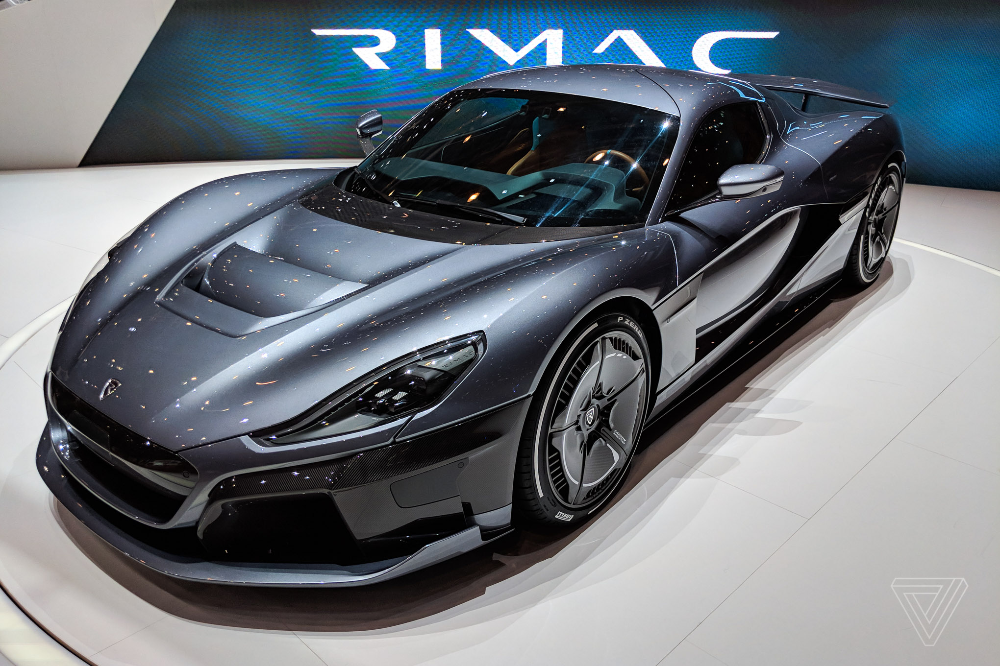

The Rimac C Two, stylized as C_Two, is a semi-autonomous all-electric sports car designed and manufactured by the Croatian automotive manufacturer Rimac Automobili.
Unveiled at the 2018 Geneva Motor Show, it is the automaker's second car after the Rimac Concept One and is described as a significant technological leap, dubbed "a car alive with technology".
The exterior was designed by the Croatian-born Austrian Adriano Mudri.
Rimac plans to produce 150 vehicles and is currently in the process of homologation for the global market.
The first deliveries are expected to take place in 2020. The C_Two was priced at €1,795,532. The car was sold out almost three weeks after its launch.